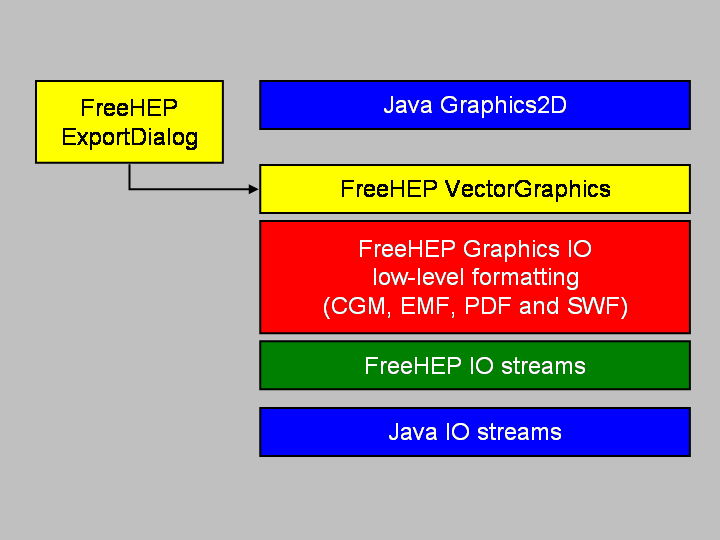

<div class="container">
	<div class="row clearfix">
		<div class="col-md-5 column">
			<p>
The <b>Vector Graphics</b> package of the <a href="http://java.freehep.org">FreeHEP Java Library</a> 
enables any Java program to export to a variety of
vector graphics formats as well as bitmap image formats. Among the
<a href="Manual.html#vector">vector formats</a> are 
PostScript, PDF, EMF, SVF, and Flash SWF, 
while the <a href="Manual.html#image">image formats</a>
include GIF, PNG, JPG and PPM.			
			</p>
			<p>
The package uses the standard <code>java.awt.Graphics2D</code> class as its interface to
the user program. Coupling this package to a standard Java program is therefore
straightforward. It also comes with a dialog box which allows you to choose between
all the formats mentioned above and set specific parameters for them.
			</p>
		</div>
		<div class="col-md-7 column">
</img>
		</div>
	</div>
</div>
